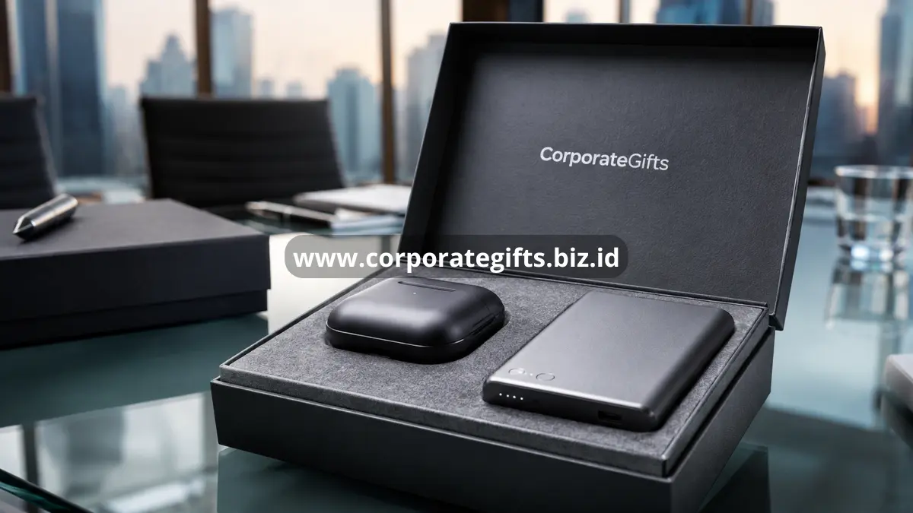

Poin Penting:
- Hadiah corporate memperkuat brand recall dan loyalitas klien maupun karyawan.
- Custom branding transforms each gift into a walking promotional medium.
- Pemilihan hadiah yang tepat mencerminkan profesionalisme dan nilai perusahaan.
- Momen pemberian yang tepat dapat meningkatkan dampak emosional serta bisnis.
- CorporateGifts menyediakan solusi hadiah corporate custom untuk berbagai kebutuhan perusahaan.
Hadiah corporate adalah barang branded strategis yang diberikan perusahaan kepada klien, mitra bisnis, atau karyawan untuk memperkuat hubungan, membangun loyalitas, dan meningkatkan brand recall dalam satu paket pemberian yang berkesan. Perusahaan biasanya memberikannya pada momen penting seperti akhir tahun, peluncuran produk, ulang tahun perusahaan, atau sebagai bentuk apresiasi kinerja karyawan dan kesetiaan klien. Dengan desain custom branding, kualitas premium, dan pemilihan barang yang relevan dengan kebutuhan penerima, hadiah corporate mengubah momen pemberian sederhana menjadi investasi jangka panjang bagi reputasi dan hubungan bisnis perusahaan.
Apa Itu Hadiah Corporate dan Mengapa Penting bagi Bisnis?
Secara definisi, hadiah corporate mencakup barang fisik maupun digital yang dibranding dengan logo, warna, atau pesan perusahaan, lalu diberikan kepada pihak eksternal seperti klien dan mitra bisnis, atau pihak internal seperti karyawan. Hadiah ini digunakan pada momen strategis, mulai dari penyambutan klien baru, perayaan pencapaian bisnis, hingga apresiasi loyalitas jangka panjang. Kepentingannya terletak pada kemampuannya menerjemahkan nilai perusahaan menjadi objek nyata yang terus digunakan dan dilihat oleh penerima, sehingga brand recall tetap terjaga jauh setelah momen pemberian berlalu. Menurut riset SkyQuest (2025), pasar hadiah corporate global tercatat bernilai lebih dari 900 miliar dolar AS dan diproyeksikan tumbuh dengan CAGR sekitar 8 persen hingga 2033, menunjukkan bahwa strategi ini semakin diandalkan perusahaan di berbagai skala usaha. Bagi perusahaan yang ingin membangun kesan profesional sekaligus personal, hadiah corporate menjadi jembatan antara komunikasi formal dan hubungan yang lebih manusiawi.
Manfaat Hadiah Corporate bagi Branding dan Loyalitas Perusahaan
Manfaat pertama yang paling terasa adalah penguatan brand recall. Setiap kali penerima menggunakan barang tersebut, logo dan identitas perusahaan kembali muncul di hadapan mereka maupun orang di sekitarnya, menciptakan eksposur berulang tanpa biaya iklan tambahan. Riset Business Research Insights (2025) mencatat lebih dari 60 persen perusahaan meningkatkan anggaran hadiah corporate untuk memperkuat hubungan klien dan keterlibatan karyawan pascapandemi, menandakan tren ini terus menguat. Selain brand recall, hadiah corporate juga berdampak pada loyalitas. Klien yang menerima hadiah bermakna cenderung merasa dihargai secara personal, bukan sekadar sebagai nomor kontrak. Karyawan yang menerima apresiasi berupa hadiah corporate berkualitas turut merasakan pengakuan atas kontribusi mereka, yang pada akhirnya mendukung retensi talenta. Manfaat lain yang sering terlewat adalah citra profesionalisme: hadiah yang dikemas rapi dengan branding konsisten mencerminkan standar kualitas perusahaan itu sendiri.
Bagaimana Hadiah Corporate Bekerja dalam Strategi Relasi Bisnis?
Proses kerja hadiah corporate dimulai dari pemilihan produk yang relevan dengan identitas dan target penerima, baik itu klien korporat, mitra strategis, maupun karyawan internal. Tahap berikutnya adalah penerapan custom branding, mulai dari logo, tagline, hingga warna khas perusahaan, sehingga hadiah tidak lagi terasa generik melainkan menjadi representasi nyata dari merek. Setelah produk dan branding disiapkan, pengemasan turut memainkan peran penting; kemasan yang rapi dan profesional memperkuat kesan pertama sebelum penerima bahkan membuka isinya. Tahap akhir adalah distribusi pada momen yang tepat, karena hadiah yang sama bisa memberi dampak berbeda tergantung kapan ia diberikan. Rangkaian proses ini menjadikan hadiah corporate bukan sekadar barang, melainkan bagian dari strategi komunikasi merek yang terukur.
Faktor yang Menentukan Efektivitas Hadiah Corporate
Kualitas dan Daya Tahan Produk
Produk yang cepat rusak atau terlihat murahan justru berisiko menurunkan citra perusahaan, bukan mengangkatnya. Pemilihan bahan berkualitas memastikan hadiah tetap dipakai dalam jangka panjang, sehingga eksposur brand berlangsung lebih lama.
Relevansi dengan Identitas Merek
Hadiah yang selaras dengan nilai dan kepribadian merek, misalnya perusahaan teknologi memilih gadget atau perusahaan yang peduli lingkungan memilih produk ramah lingkungan, terasa lebih autentik di mata penerima dibanding hadiah generik.
Ketepatan Momen Pemberian
Momen pemberian memengaruhi makna hadiah. Hadiah yang diberikan pada saat perayaan pencapaian atau hari penting klien akan lebih diingat dibandingkan dengan pemberian yang tidak memiliki konteks yang jelas.
Perbandingan Hadiah Corporate untuk Klien, Mitra, dan Karyawan
Meski sama-sama disebut hadiah corporate, kebutuhan untuk klien, mitra bisnis, dan karyawan tidaklah identik. Hadiah untuk klien cenderung mengutamakan kesan premium dan eksklusivitas karena mewakili citra perusahaan di mata pihak eksternal. Hadiah untuk mitra bisnis biasanya menekankan simbol kerja sama jangka panjang, seperti barang yang mencerminkan nilai kolaborasi. Sementara itu, hadiah untuk karyawan lebih berfokus pada aspek kepraktisan dan apresiasi personal, karena digunakan dalam aktivitas kerja sehari-hari. Memahami perbedaan tujuan ini membantu perusahaan menentukan kategori hadiah corporate yang paling relevan untuk setiap segmen penerima.
Kesalahan Umum yang Membuat Hadiah Corporate Kurang Berkesan
Salah satu kesalahan paling umum adalah memilih barang generik yang tidak memiliki keterkaitan dengan identitas maupun kebutuhan penerima, sehingga hadiah terasa asal jadi. Kesalahan selanjutnya adalah mengorbankan kualitas untuk mengurangi biaya, meskipun barang yang mudah rusak justru meninggalkan kesan negatif yang lebih lama dibandingkan dengan kesan positif dari hadiah itu sendiri. Branding yang tidak konsisten, seperti logo yang buram, warna yang tidak sesuai identitas merek, atau posisi cetak yang kurang rapi, juga mengurangi nilai profesional hadiah. Terakhir, banyak perusahaan memberikan hadiah tanpa mempertimbangkan waktu yang tepat, sehingga momentum emosional yang seharusnya tercipta menjadi hilang.
Kapan Waktu Terbaik Perusahaan Memberikan Hadiah Corporate?
Secara umum, hadiah corporate paling berdampak saat diberikan pada momen yang memiliki makna emosional atau simbolis, seperti awal kerja sama dengan klien baru, perayaan akhir tahun, hari jadi perusahaan, atau apresiasi atas pencapaian target. Pembahasan lebih mendalam mengenai momen terbaik memberikan hadiah corporate sepanjang siklus bisnis dapat membantu perusahaan menyusun kalender pemberian hadiah yang lebih terstruktur dan berdampak.

Jenis Hadiah Corporate Apa yang Paling Diminati Perusahaan Saat Ini?
Preferensi hadiah corporate terus berkembang mengikuti kebutuhan dunia kerja modern, mulai dari barang fungsional yang dipakai sehari-hari, produk premium bernuansa lifestyle, hingga pilihan ramah lingkungan yang selaras dengan komitmen keberlanjutan perusahaan. Ulasan lengkap mengenai ragam hadiah corporate untuk klien dan mitra bisnis dapat menjadi referensi bagi perusahaan yang ingin menyesuaikan pilihan hadiah dengan karakter penerima dan tujuan pemberian.
Bagaimana Custom Branding Meningkatkan Nilai Hadiah Corporate?
Custom branding mengubah barang generik menjadi aset pemasaran yang berjalan sendiri. Logo, warna korporat, dan pesan merek yang diterapkan secara konsisten membuat penerima mengasosiasikan kualitas produk dengan reputasi perusahaan. Pembahasan lebih rinci mengenai custom branding pada hadiah corporate dan dampaknya terhadap brand recall dapat membantu perusahaan memaksimalkan nilai investasi hadiah yang diberikan.
Hadiah corporate yang dirancang dengan tepat, mulai dari kualitas produk, relevansi merek, hingga ketepatan momen pemberian, mampu mengubah interaksi bisnis biasa menjadi hubungan yang lebih kuat dan berkesan. Jika perusahaan Anda ingin menghadirkan hadiah corporate custom branding yang mencerminkan profesionalisme sekaligus meninggalkan kesan mendalam bagi klien dan karyawan, CorporateGifts siap membantu mewujudkannya. Hubungi tim CorporateGifts sekarang untuk konsultasi dan pemesanan hadiah corporate yang sesuai dengan kebutuhan perusahaan Anda.
Pertanyaan Umum Seputar Hadiah Corporate
1. Apa perbedaan hadiah corporate dan souvenir biasa?
Hadiah corporate dirancang khusus dengan custom branding dan tujuan strategis untuk memperkuat hubungan bisnis, sementara souvenir biasa umumnya bersifat umum tanpa strategi merek yang terstruktur.
2. Berapa budget ideal untuk hadiah corporate?
Budget hadiah corporate bervariasi tergantung skala perusahaan dan tujuan pemberian, mulai dari kategori fungsional dengan harga terjangkau hingga kategori premium untuk klien strategis; jumlah pastinya sebaiknya disesuaikan dengan kebijakan anggaran masing-masing perusahaan.
3. Apakah hadiah corporate bisa dipesan dalam jumlah kecil?
Sebagian besar penyedia hadiah corporate, termasuk CorporateGifts, dapat melayani pemesanan dalam berbagai skala, baik untuk kebutuhan tim kecil maupun distribusi masal ke banyak klien.
4. Berapa lama waktu produksi hadiah corporate custom?
Waktu produksi hadiah corporate custom umumnya bervariasi tergantung jenis produk dan kompleksitas branding, sehingga perusahaan disarankan memesan lebih awal menjelang momen penting seperti akhir tahun.
5. Apakah hadiah corporate cocok untuk perusahaan berskala kecil dan menengah?
Hadiah corporate tetap relevan bagi perusahaan kecil dan menengah karena membantu membangun kepercayaan klien dan loyalitas karyawan sejak tahap awal pertumbuhan bisnis, tanpa harus menunggu skala usaha membesar.